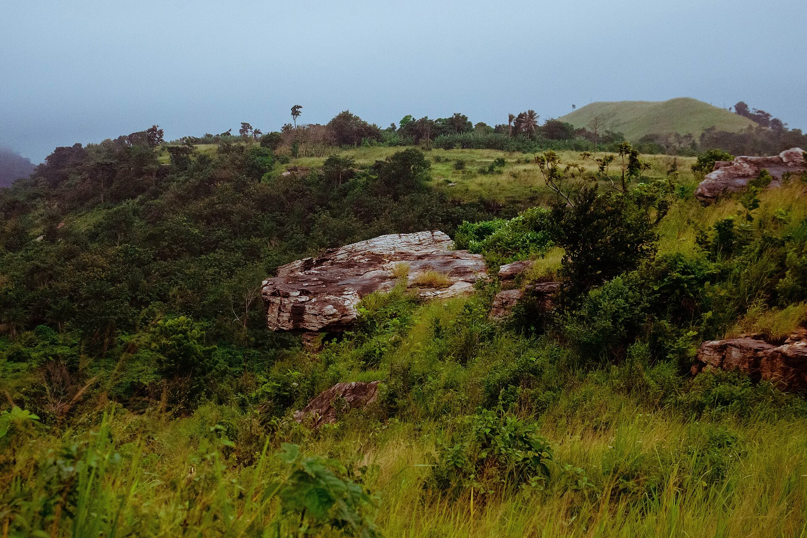

Data
- Area:
- 238,535 sq km
- Population:
- 34.4 million
- Capital:
- Accra
- Languages:
- English, Akan, Ewe
- Currency:
- Ghana cedi (GHS)
- Time Zone:
- GMT (UTC+0)
- Calling Code:
- +233
- Internet TLD:
- .gh
Weather
- Temperature:
- 10 °C
- Conditions:
- Partly cloudy
- Wind:
- 5 km/h
- Wind Chill:
- N/A